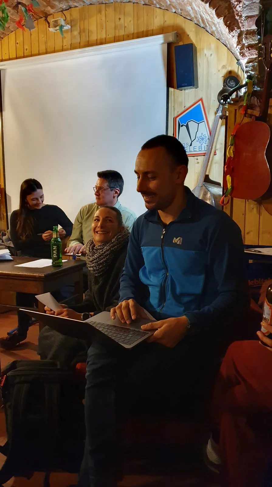

Izborna skupština SOV
U petak, 17. siječnja 2020. održana je Izborna skupština SOV-a, a kako to već priliči izbornim skupštinama izabrano je i novo vodstvo Odsjeka.

U petak, 17.01.2020. održana je izborna skupština SOV, i osim pročitanih izvješća Pročelnika, tajnika, oružara i arhivarke o radu Odsjeka u protekloj godini, kako to priliči na izbornoj skupštini - uz nešto grickalica, delicijica te finih pića i doniranih gajbi pive, izabrano je i novo vodstvo. No, o tome koju riječ nešto niže.
Prije toga nekoliko bitnih navoda iz izvješća tajnika Marka Rakovca.Tako je naš Raki kronološki naveo da je kroz 2019. g. održano 48 sastanaka, a obzirom da je ista imala 51 srijedu, to govori da Odsjek ozzbiljno shvaća institut sastanka. Neprovedeni sastanci nisu održani iz opravdanih razloga; preklapanje sa državnim blagdanima, dan godišnje skupštine SOV i preklapanje datuma sa istraživanjima na ekspediciji.
Broj članova je u stalnom porastu, uže aktivnije članstvo broji 121 člana, od čega je četvrtina vrlo aktivna, kako na sastancima tako i na izletima.
U 2019. godini ukupno je bilo 130 speleoloških izleta (za razliku od 2018.g. kad je održano 85 speleoloških izleta što je 65% više u odnosu na broj izleta u 2018. godini). Izleti su provedeni s jednom ili više različitih svrha. Izleti (neovisno o trajanju) su se odnosili na istraživanja speleoloških objekata u svrhu inventarizacije prirodnih vrijednosti RH odnosno monitoringa i istraživanja, turističkih posjeta, speleoronilačkih izleta, zatim izleti sa svrhom znanstvenih opažanja i izmjera te niz izleta sa svrhom rekognosciranja terena. Također, određen broj izleta proveden je u sklopu aktivnosti drugih speleoloških udruga te jedan izlet u sklopu inicijative „Čisto podzemlje“.
Tijekom 2019. godine organizirano je 136 nespeleoloških izleta, pretežito planinarski, penjački (14), skijaški (18) i speleoronilački/ronilački (12). Najviše se planinarilo na Sljeme, Velebit i Julijske. Od inih izleta bitno je spomenuti Čari izvora te projekt Šlapice. U kolovozu 2019.g. održana je značajna speleološka ekspedicija „Sjeverni Velebit 2019.g.“ u organizaciji SO Velebita (voditeljica Marina Grandić) gdje se istražilo jamu Nedam do -740m. Na istoj je istraženo i nacrtano 40 novopronađenih objekata. Nakon ekspedicije kompletirani su speleološki nacrti te nastavljena je uspješna suradnja s javnim ustanovama koje upravljaju tim područjem. Treba istaknuti da je mjesec dana nakon završetka ekspedicije Jama Nedam istražena do -1021m dubine! O tom istraživanju napravljen je i film "Nedam" koji je osvojio 2. mjesto na Eurospeleo Image and Films u Bugarskoj. Vrlo značajan uspjeh ostvaren je tehnikom speleoronjenja - spajanje špilje Tounjčice sa Špiljom u kamenolomu Tounj. U šest zarona izveli su ga Jonathan Gabris i Ivan Miloš. Iako topografsko snimanje tada nije provedeno, zbrajanjem poznatih duljina ove dvije špilje dobili smo novi špiljski sustav veći od 9 kilometara - točnije 9.021 m! Uspjeh je tim veći što je ostvaren nakon brojnih pokušaja spajanja 70-ih, 80-ih godina i u 2011-oj. Također je važno i što se, nakon duljeg vremena, u Odsjeku zanovila speleoronilačka aktivnost.
Isto tako, članovi odsjeka posjetili speleološke objekte ili planinske lance u Maroku, BIH, Mađarskoj, Crnoj Gori, Austriji, Sloveniji, itd. Naši članovi uspješno su pohodili speleološke ekspedicije drugih speleoloških društava u Hrvatskoj i u inozemstvu to na Šverdi, Crnopcu, BiH, Slovenskom Kaninu, Crnoj Gori, Julijskim Alpama, te slovenskog Kanina, SAD-u i Julijskim Alpama.
49. Zagrebačku speleološku školu PDS „Velebit“ upisalo se 25 polaznika, a zvanje speleološkog pripravnika steklo je svih 25 novih velebitaša u svibnju 2019.g., učeći i vježbajući prethodnih tridesetak dana. Speleološkom ispitu KS HPS u 2019. g., čiji je domaćin bio SO PDS Velebit, a koji se održao u siječnju na Žici u Zagrebu, pristupio je i uspješno položio za naslov speleolog Mak Sedmak dok je Marko Rakovac obranio radnju za instruktora speleologije. Osim toga, članovi SOV-a sudjelovali su na seminaru o samospašavanju, seminaru o digitalnoj obradi speleološkog nacrta, seminaru o orijentaciji, Školi krša u Postojni te na 4 vježbe civilne zaštite u svojstvu Specijalističkih postrojbi Grada Zagreba.
Tiskan je Velebiten broj 53. Tiskano je i 2. izdanje knjige Speleologija od izdavača PDS Velebit, HGSS i HPS. Naši članovi su aktivno sudjelovali na skupu speleologa Hrvatske koji se održao u Pazinu u mjesecu studenom te na međunarodnim speleološkim skupovima u Bugarskoj i Austriji gdje su prezentirali rad i postignuća hrvatskih speleologa.
U protekloj godini, na sastancima je 'uništeno' 42 gajbe pive mješovitih proizvođača doniranih iz raznih razloga; od rođendana, diplomiranja, pa do prekategorizacije u bake i dedove... Među hmeljnim proizvodima dominira Velebitsko. Naravno. -----------------------------------------------------------------------------------------------------------------------------------------
Nakon izvješća pristupilo se osnivanjem radnih tijela i sveg što uz to ide. Radno tijelo skupštine razriješilo je staro vodstvo, a od strane starog rukovodstva, novim gajbama pive raspoloženo članstvo izabralo je i novo rukovodstvo našeg odsjeka. A oni su:
Pročelnica: Valentina Plemenčić Tajnik: Darko Španja Arhivarka: Gorana Sačer Oružar: David Rafael Lipovac Bibliotekar: Marko Ličko [caption id="attachment_3103" align="alignnone" width="249"] Imamo pročelnicuuuuu![/caption]O njima nešto više u narednim danima, nakon što otvore svoju dušu iritantno neumoljivim web urednicima.
Na kraju dodajmo da su nam kao dragi gosti na skupštinu došli Željezničarci. Boltek ovoga puta nije došao, ali samo zato što je te večeri napunio svoj 84-i rođendan! E pa sretan Ti rođendan, dragi naš Boltek!
[caption id="attachment_3090" align="alignnone" width="11022"] Radno tijelo skupštine i glasačka mašinerija[/caption] [caption id="attachment_3097" align="alignnone" width="4032"] Luka Havliček, u tom trenutku još uvijek Pročelnik, podnosi svoje izvješće.[/caption] [caption id="attachment_3094" align="alignnone" width="4032"] Lijeva strana galerije pomno sluša izvješće arhivarke...[/caption] [caption id="attachment_3091" align="alignnone" width="4032"] ...a i na desnoj strani galerije nitko nije zaspao.[/caption] [caption id="attachment_3096" align="alignnone" width="4032"] Za razliku od uobičajenog Velebitaškog stola, imali smo decentno jednostavni skupštinski stol. A bilo je i ponešto za vegetarijance. Grijalica je tu da drži stol i bicikl podgrijanima. :)[/caption] Na kraju, jedna već sada povijesno-raritetna fotografija: [caption id="attachment_3100" align="alignnone" width="4032"] Pročelnički slijed proteklih godina: Marko Rakovac, Marijan Sutlović, Tanja Šinko, Luka Havliček i Valentina Plemenčić.[/caption] Foto: M. Rakovac, B. Prpić